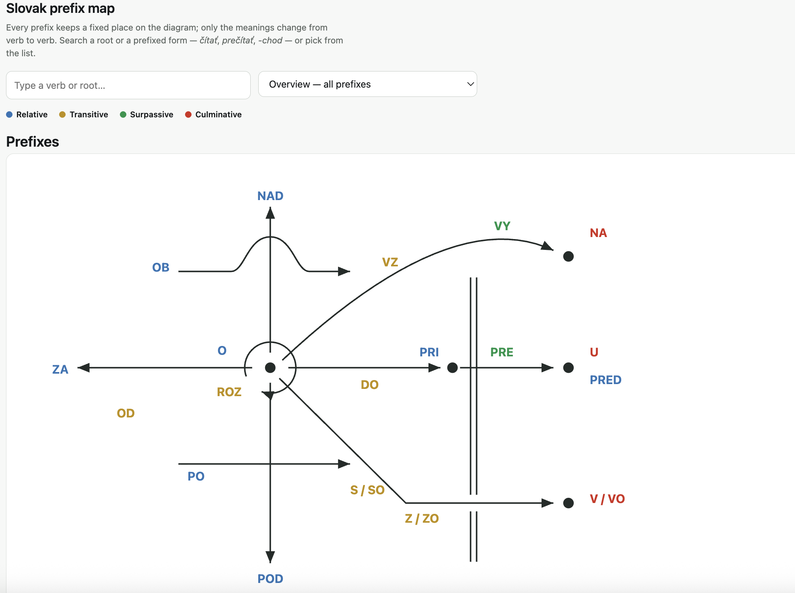

Thanks for visiting my GitHub page. Here you will find some information about me, and examples of the projects I am building with a bit of coding and AI.
Vienna & Bratislava · Available now
To help me with my job search, I made a Kanban board. Open it and press the green button to download a copy for yourself.
 Job Search Kanban Board
Job Search Kanban Board
I turned a PDF version of my previous PI's book into an interactive Mathematica notebook, using Claude Code to expedite the process.

Wolfram Mathematica
A page for learning what prefixes mean for certain nouns and verbs in Slovak, according to my own linguistic convention.

Learn Slovak prefixesI am an experimental physicist with over fourteen years in research and teaching across three countries. Performing these two tasks well requires empathy, honesty, and acceptance of healthy criticism. With these principles I have published 23 papers as co-author, six as first author, taught graduate sensor technologies as well as bachelors and high school physics and math.
From December 2018 to July 2026, I had the honor of supporting the Research Unit of Nano- and Microsensors, in the Institute of Sensors and Actuator Systems (ISAS) at TU Wien, as an international postdoc with interdisciplinary experience. Though nanoelectromechanical sensors (NEMS) was a new subject for me, I mastered lock-in detection, PLLs, micro and nanoresonator fabrication and characterization including the physical noise characteristics and limits of these systems. I gained more experience with control systems interfacing and FEM simulations.
My doctoral work was in ultrafast multi-pulse absorption spectroscopy of light-harvesting systems, where I developed a kinetic modeling and regression code which made distinction of couple[PARAGRAPH TRUNCATED — PASTE FULL TEXT HERE]
My teaching experience spans graduate level to high school: engaging graduate lecturing, curriculum redesign, doctoral research mentoring, undergraduate physics laboratory instruction and [PARAGRAPH TRUNCATED — PASTE FULL TEXT HERE]
English is my native language, I speak Slovak, and my German is at B1 and improving.
23 peer-reviewed articles · six first-authored · full list on ORCID